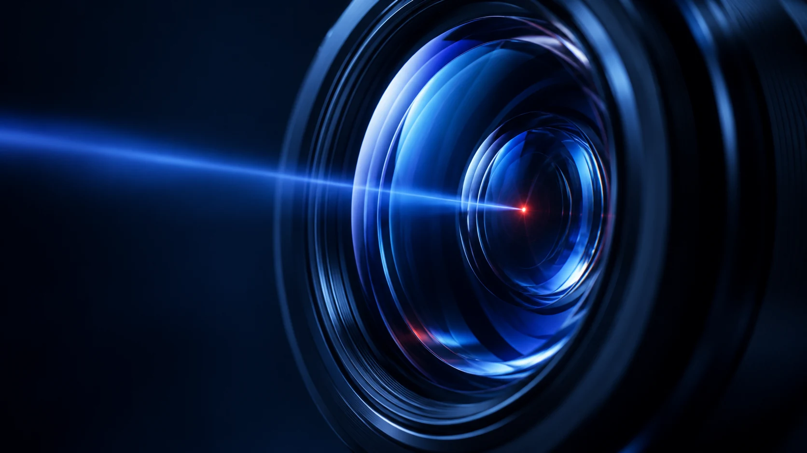

CAPTURA E LAUDOS PARA ENDOSCOPIA VISUS PRO 16.5
Software para endoscopia
e laudos digitais
Do registro do exame à documentação em PDF.
Capture imagens e vídeos, revise achados e organize o laudo de endoscopia digestiva alta ou colonoscopia junto ao histórico do paciente.

ENDOSCOPIA DIGESTIVA
Imagem, achados e laudo.
Ligados ao mesmo exame.
O Visus organiza os registros da endoscopia digestiva alta e da colonoscopia em uma rotina que começa pelo paciente e termina com a revisão do documento.
Identifique o exame
Associe paciente, procedimento e informações clínicas ao registro.
Capture o procedimento
Registre fotos, vídeos e clipes recentes pela fonte de vídeo compatível.
Revise os achados
Organize a galeria, marque pontos importantes e compare imagens do paciente.
Finalize o documento
Preencha o modelo, confira a prévia e emita o laudo em PDF.
COMPATIBILIDADE DE VÍDEO
Confira a fonte
do seu equipamento.
O Visus informa suporte a câmeras USB, HTTP Snapshot e MJPEG. A compatibilidade depende da saída disponível no processador ou na câmera e da configuração da estação.
- Modelo da câmera ou processador de vídeo
- Tipo de saída de vídeo disponível
- Procedimento realizado e modelo de laudo utilizado
Essas informações ajudam a avaliar o fluxo durante uma apresentação. Não envie dados identificáveis de pacientes.

PROCEDIMENTOS
Um fluxo preparado
para o exame.
Na gastroenterologia, a página do Visus contempla endoscopia digestiva alta e colonoscopia, com modelos e campos do procedimento selecionado.
TECNOLOGIA RESPONSÁVEL
IA que apoia.
Profissional que decide.
Quando configurada e autorizada, a IA pode sugerir textos para revisão. Ela não faz diagnóstico nem assina o laudo; a avaliação clínica permanece com o profissional.

Os exames permanecem prioritariamente no computador. Auditoria e backup apoiam a organização e a rastreabilidade dos registros.
DÚVIDAS SOBRE O SOFTWARE DE ENDOSCOPIA
Veja se o fluxo
se encaixa na sua sala.
O Visus atende endoscopia digestiva alta e colonoscopia?
Sim. A página do Visus apresenta esses procedimentos entre os modelos de Gastroenterologia. A apresentação pode mostrar os campos e o fluxo de documentação de cada exame.
Quais fontes de vídeo o Visus informa suportar?
Câmeras USB, HTTP Snapshot e MJPEG. A compatibilidade do equipamento específico deve ser avaliada conforme sua saída de vídeo e configuração.
É possível revisar imagens antes de emitir o laudo?
Sim. O fluxo inclui galeria, anotações, comparação visual e prévia do documento antes da emissão do PDF.
A inteligência artificial faz o diagnóstico?
Não. Quando habilitada, ela pode apoiar sugestões de texto para revisão. O profissional avalia os dados e decide o conteúdo do laudo.
VISUS PRO 16.5
Confira a compatibilidade
com sua rotina.
Na apresentação, mostre o tipo de exame, a saída de vídeo do equipamento e o modelo de laudo utilizado. A equipe avalia o fluxo adequado para sua estação.
Solicitar apresentação